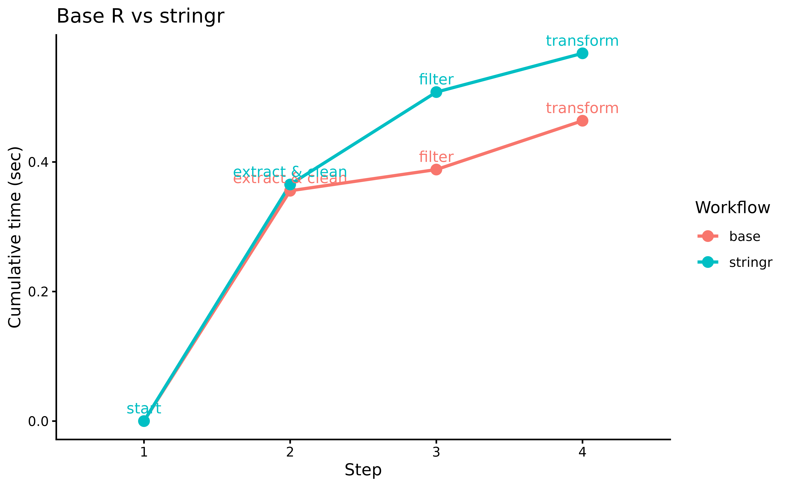

Timing R Pipelines
timing_R_pipelines.RmdOverview
pipetime enables inline timing of R
pipelines (|>), helping identify performance bottlenecks
and compare different approaches without disrupting your workflow.
We illustrate this with a text processing example, comparing base R
string functions against the optimized stringr package for
common data cleaning tasks.
Workflow A üê¢ : Uses base R string functions (
gsub,substr,grepl).Workflow B üöÄ: Uses
stringr’s optimised functions.
Example Data
set.seed(123)
make_str <- function(n) paste(sample(letters, n, TRUE), collapse = "")
text_data <- data.frame(
id = 1:1e5,
email = paste0(
sapply(sample(5:15, 1e5, TRUE), make_str),
sample(c("@gmail.com", "@yahoo.com", "@hotmail.com"), 1e5, TRUE)
),
phone = paste0(
"(",
sample(100:999, 1e5, TRUE),
") ",
sample(100:999, 1e5, TRUE),
"-",
sample(1000:9999, 1e5, TRUE)
),
text = sapply(sample(20:100, 1e5, TRUE), make_str)
)
head(text_data, n = 3)
#> id email phone
#> 1 1 qgxxfbv@hotmail.com (751) 344-7289
#> 2 2 itajkbw@yahoo.com (246) 230-8897
#> 3 3 nlgbhuoikefcml@hotmail.com (918) 284-3213
#> text
#> 1 ebivtrgrqnoawlpnpaanydepmn
#> 2 fsibsapgehcsjmyvjuis
#> 3 qouuphjmkgyttyeaxttydtuuguklfrlwvnTiming Workflows
We use the log argument so each workflow stores its
timings separately.
library(dplyr)
library(pipetime)
options(pipetime.console = FALSE)
# Workflow A: Base R
wf_A <- text_data |>
mutate(
domain = sub(".*@", "", email),
clean_phone = gsub("[^0-9]", "", phone),
word_count = lengths(strsplit(text, " "))
) |>
time_pipe("extract & clean", log = "base") |>
filter(grepl("^[a-m]", text)) |>
time_pipe("filter", log = "base") |>
mutate(
text_upper = toupper(text),
truncated = substr(text, 1, 50)
) |>
time_pipe("transform", log = "base")
# Workflow B: stringr (optimized)
wf_B <- text_data |>
mutate(
domain = str_extract(email, "(?<=@).*"),
clean_phone = str_remove_all(phone, "[^0-9]"),
word_count = str_count(text, "\\S+")
) |>
time_pipe("extract & clean", log = "stringr") |>
filter(str_detect(text, "^[a-m]")) |>
time_pipe("filter", log = "stringr") |>
mutate(
text_upper = str_to_upper(text),
truncated = str_sub(text, 1, 50)
) |>
time_pipe("transform", log = "stringr")Results
# Collect both logs
logs <- get_log() |>
bind_rows(.id = "workflow") |>
group_by(workflow) |>
# Add a starting point
group_modify(~ add_row(.x, duration = 0, label = "start", .before = 1)) |>
mutate(step = factor(row_number()))
library(ggplot2)
logs |>
ggplot(
aes(
x = step,
y = duration,
colour = workflow,
group = workflow
)
) +
geom_line(linewidth = 1) +
geom_point(size = 3) +
geom_text(aes(label = label), vjust = -0.7, size = 3.5, show.legend = FALSE) +
labs(
x = "Step",
y = "Cumulative time (sec)",
title = "Base R vs stringr",
colour = "Workflow"
) +
theme_classic()